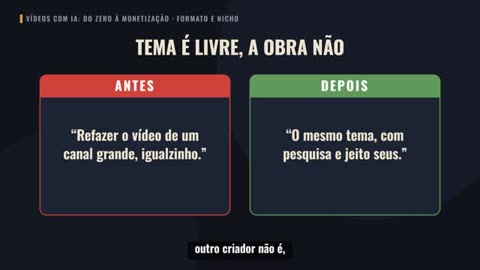
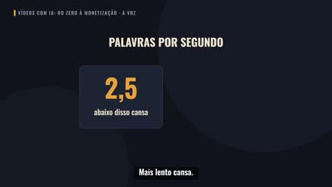
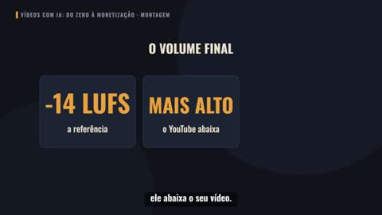
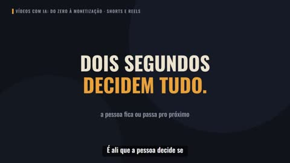
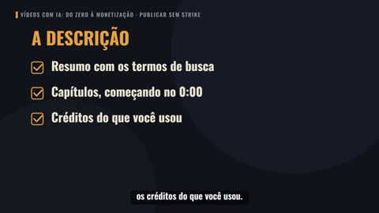
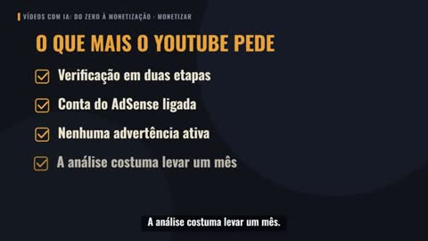
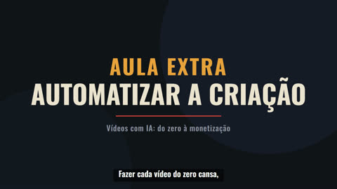

O conteúdo
12 aulas, do vídeo à automação.
Módulo 1 · Fazer o vídeo
 Boas-vindasO que a IA já faz em cada etapa do vídeo
Boas-vindasO que a IA já faz em cada etapa do vídeo
Escolher o formato e o temaOs formatos e como ver se o assunto tem busca Roteiro com IAO gancho, a estrutura, a pesquisa com fonte e a revisão
Roteiro com IAO gancho, a estrutura, a pesquisa com fonte e a revisão
A voz com IAA voz pra cada tema, o tom e o ritmo- As imagensImagem livre, licenças e o mesmo personagem em toda cena
 Vídeo gerado por IA e animaçãoComo pedir a cena certa e a animação que a IA escreve
Vídeo gerado por IA e animaçãoComo pedir a cena certa e a animação que a IA escreve
A montagemEditor grátis, legenda, música segura e volume
Módulo 2 · Publicar e monetizar
 Thumbnail e títuloA frase que dá vontade de clicar e o título que o celular não corta
Thumbnail e títuloA frase que dá vontade de clicar e o título que o celular não corta
Shorts e ReelsUm vídeo vira vários cortes, com gancho de 2 segundos
Publicar sem tomar strikeRótulo de IA, direito autoral e conteúdo repetitivo
MonetizarO Programa de Parcerias e outros caminhos de renda
Aula extra · Automatizar

Automatizar a criaçãoO projeto do canal, a pauta, o lote, o modelo e o script que monta o rascunho
 BÔNUS 1
BÔNUS 1 BÔNUS 2
BÔNUS 2 BÔNUS 3
BÔNUS 3